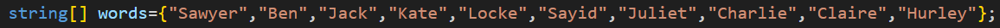
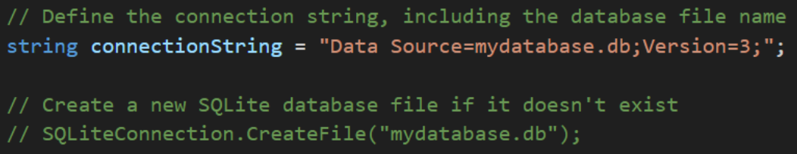
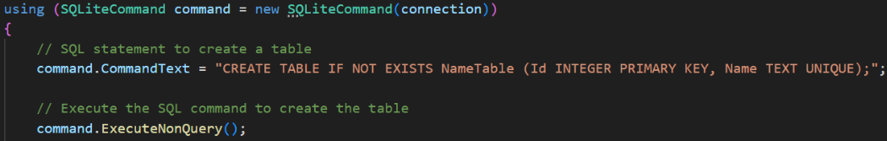
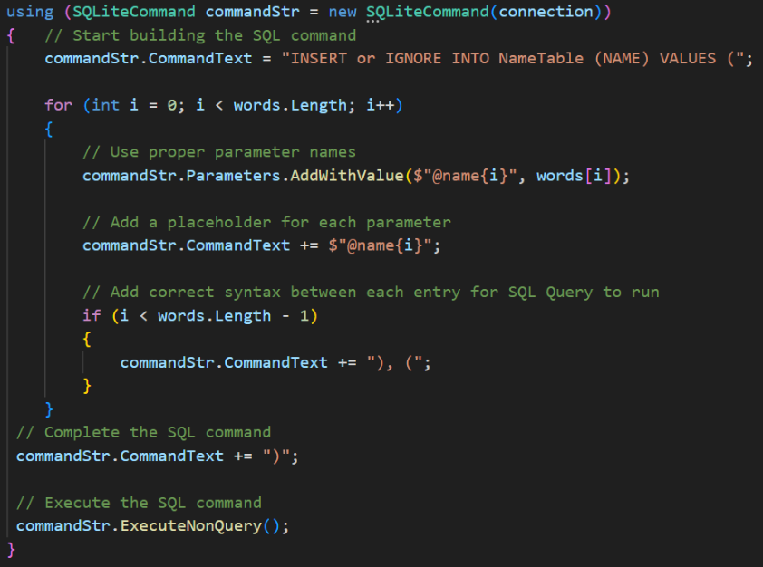
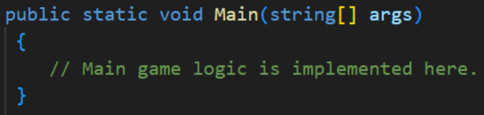
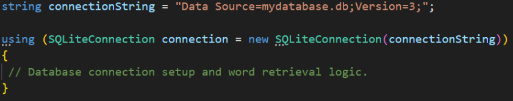
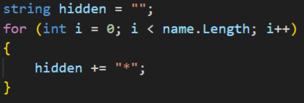
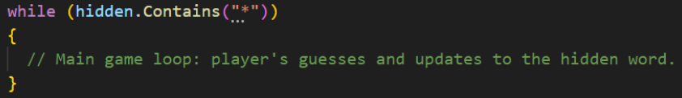

Hangman Game

I'm excited to share my journey in developing this simple and classic word-guessing game, Hangman, using the power of C#. This project started as part of a course on C# and expanded as I continued to learn more about programming and developed confidence in logically setting up nested loops.The goal was to create an interactive, user-friendly experience that captures the essence of this timeless game and brings it to the digital world. Using C#'s versatility and SQLite's simplicity to build a Hangman game that's both enjoyable and exciting. Follow along as I explain this project in 13 simple, easy-to-follow steps:
1. Define an Array of Words:
An array of words is defined, which will be used to populate a SQLite database.
2. Define a Connection String and Create Database, if applicable:
This connection string specifies the SQLite database file name as "mydatabase.db." This section of code can also create a SQLite database file, of the same name, if the user has not created one yet.
3. SQLite Database Connection:
The code establishes a connection to the SQLite database:
- “SQLiteConnection” is used to open and manage the database connection.
- The “using” statement ensures that the connection is properly disposed of when done.
4. Create a Table:
This block of code creates an SQLite table named "NameTable" if it doesn't already exist. The table has two columns: "Id" and "Name". The "Id" column is an auto-incrementing primary key, and the "Name" column contains unique text values.
5. Insert Data Into Table:
This code inserts the words from the "words" array into the "NameTable". It uses parameterized queries to avoid SQL injection, which demonstrates an effort to ensure database security. The "INSERT or IGNORE" statement prevents duplicate entries in the "Name" column.
6. Close the Database Connection:
The database connection is properly closed to release resources.
NOTE: The following steps are completed in the HangmanMain.cs file as listed in the Github Repository, not the Database.cs file.
7. Main Method:
The "Main" method is the entry point of the program where the hangman game is played.
8. Database Connection:
The code establishes a connection to an SQLite database located in the file "mydatabase.db". It selects a random word from the "NameTable" and stores it in the "name" variable.
9. Hidden Word Initialization:
This initializes the "hidden" variable with asterisks, representing each letter of the "name" that the player has to guess.
10. Game Loop:
The game loop runs as long as there are asterisks in the "hidden" word. This loop allows the player to guess letters and updates the "hidden" word accordingly.
11. Guess Validation:
User input can be fickle, so the code takes the following steps to validate the guess input and ensure smooth game flow:
- The code validates the player's input and ensures it's a valid letter.
- If the player guesses the entire word, the game ends and displays a winning message.
- If the player's input is not a single letter, they are prompted to try again.
12. Updating the Hidden Word:
As the user inputs guesses, the hidden word will be updated on-screen to track progress and aid informed guesses:
- The code updates the "hidden" word based on correct guesses. It replaces asterisks with the guessed letters, maintaining the same letter case as the original word.
- If the guessed letter is correct and appears multiple times in the "name", it updates all occurrences.
13. Game Result:
After the game loop ends, the code checks if the player has successfully guessed the word. If so, it displays a success message! The game may be used as is to allow unlimited guesses to players, or may be updated to implement a maximum number of guesses, using a for loop that is commented out on line 55. Overall, this code implements a simple hangman game that retrieves a random word from a database, allows the player to guess letters, and updates the display until they either complete the word or run out of guesses. The code demonstrates the use of parameterized queries to ensure database security, and provides error handling to avoid multiple entries. For even more details or to see copies of the files for this project, visit my Github Repository!